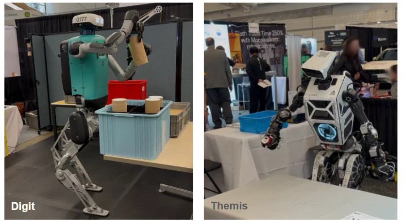
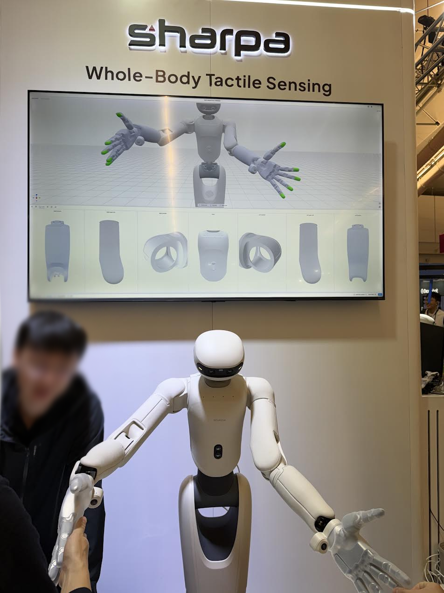
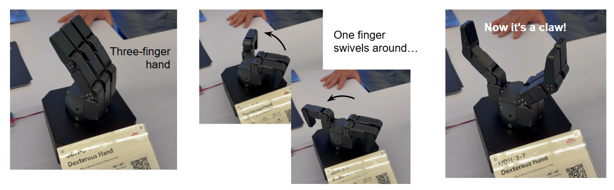
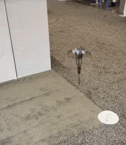

IROS 2026
Poster Presentation and Favorites
Last week I had the opportunity to present a poster and lightning talk at the IROS WORLDS Workshop and attend a few days of the IROS 2026 conference in Pittsburgh. I wanted to write a post to hit some of the highlights, call out some themes in works that I found interesting, and talk about some of the crazy platforms in the exhibit hall.
My poster presented Continuous Conditioning of VLAs with Augmenting EMG and Visual Task Descriptors, a paper that ties up two recent projects at APL concerning VLA tuning. Our central question was whether it is possible to tune a VLA to understand task specifications in a modality other than language. We showed that you absolutely can, and we have experiments communicating tasks via EMG gestures (added to low-level state information) and visual annotations (added to image inputs). I am personally split on whether this is an obvious result (of course you can put more information into state and tune the model to pick up on it), or actually really interesting (the model was pretrained entirely on data in which language was used to explain the objective).
Personally, I find this question interesting because while language is a natural way to communicate with an LLM or VLM on a computer, it is one of several modalities that humans might use to communicate in a physical environment. Humans use a combination of language, body language, and gestures to convey intent, and for complex ideas we might even use something like diagrams or sketches. Some natural questions arise: how can a VLA receive communication, and how would a human prefer to communicate? We are just scratching the surface of the former question in our work.
Favorite Workshop Works and Mentions
I wanted to mention a few of my favorite works that were mentioned in the WORLDS workshop and some of the other workshops on day one. I have found that the works that really appeal to me are not just academically novel but are introducing some new perspective about robotics or learning, and challenging the status-quo in some way (or maybe just challenging my own understanding of an aspect of the field).
Coming from a DRL and IL background, I typically study problems in robotics that look like the following, to be extremely causal about definitions:
You are ultimately trying to learn a policy that outputs actions in response to states. States in => actions out.
There is some well-known starting state, like a "home position".
Control happens in discrete steps at a chosen timescale.
State includes proprioceptive input and/or vision (and language in the VLA case)
If all is well and good, you will be able to deploy your policy into an environment with similar structure.
To get us on theme, I would say that the poster I presented challenges item (4), by asking if language can be swapped out for something else when communicating a task to a VLA. Rather than trying to improve performance under standard assumptions, the novelty comes from testing the gray areas around these assumptions. Going forward I am going to try to use this strategy more.
Questioning #2: Starting State Distribution
I saw two works that I felt were challenges to point (2): how we define the starting state. A fellow WORLDS poster was Pangaonkar, Rath, and Patil’s StageCraft, which tries to understand which objects in a scene might be obstructing or distracting a VLA. After observing failed rollouts, the system learns how to remove distractors up-front. My takeaway from this was: if you are starting in a state you don’t like, can you just change the state before you even start? In other words, the initial state is not something you are just handed, but rather something that you should think about actively manipulating yourself. If policy A likes its initial state in a particular fashion, maybe some policy B can prepare it accordingly.
I also saw a talk from Abhishek Gupta in which he presented, among other works, Yin et al's OmniReset. This is scaled, massively parallel PPO, with a key change that the reset positions are carefully crafted to cover many relevant areas of the problem that would normally be quite hard to find via exploration. Rather than some home position or default position in a pick-and-place scenario, the resets should cover many initial poses, approach poses, near grasps, near places, and perturbations. Essentially: offload the exploration problem to the reset mechanism. Like StageCraft, this is questioning which aspects of the MDP are inside our control, but while StageCraft offers a physical intervention, OmniReset is saying that we could just redefine the MDP to be in our favor.
I wanted to note here an important ramification of the above: you could easily apply the same idea to demonstration data collection for imitation learning. Instead of collecting a similar trajectory N times, the question should be: which N variants and subtrajectories should I show?
Questioning #3: Chosen Timescale
I learned about Watson et al’s Let it Cook, which explores explicitly learning to wait for long periods in tasks that have longer time horizons- think waiting for water to boil, or glue to set, etc. I really liked this because my first intro to RL was the DQN Atari paper, which does actually include a waiting action (a "no-op"). But, trying to learn something like "no-op for 1000 timesteps" is not only difficult to learn, it is also not truly waiting because the policy is not dormant. What is really happening in a series of Atari no-ops is that the system is actively monitoring the environment at N frames per second and choosing not to take action. A true "wait" is not just "no actions", it is also "no sensing", and this needs its own mechanism. So this is a direct challenge to assumption (3) that the policy should operate at a specific rate.
Questioning #4: Including Touch Modalities
A huge theme at the conference was touch sensing and how it should be integrated in (4). I saw a fascinating talk by Mark Cutkosky explaining that touch it itself multimodal, and might include things like force, slip, heat conduction, and distinguishing points from fine-level textures. Therefore, state definitions with full touch sensing would be considerable more expanded than a generic {proprio, vision, touch}, although most applications probably do not need all of the touch modalities included. For example, if you just care about hot/cold then maybe a thermal camera could replace conduction sensing.
There were plenty of exhibits showing different touch sensors. My favorites were playing with the new Allegro Hand V6 which included GelSight finger tips, and the whole-body e-Skin from Sharpa (see end of post).
Questioning #5: Train/Test Environment Alignment
Hu et al’s Privileged Sensing Scaffolds Reinforcement Learning: This is focused on learning policies with extra sensors and then deploying them with less sensing, which is a very interesting challenge to point (5) above. Basically, a really core assumption of policy learning is that we are trying to prepare a policy for a real environment, and therefore it behooves us to make the train and test settings as similar as possible (the sim-to-real gap being one example). But Hu is saying: no, actually, that is slightly wrong! If the training environment has extra information, that is potentially even a good thing. The train/test environments being different is fine, as long as they are different in a way we can use to our advantage.
Gupta also discussed Levy et al's SimDist in his talk, which is specifically looking at the sim-real dynamics gap. This doesn’t necessarily challenge the fourth assumption above but is looking to address the fact that simulated dynamics (friction, contacts, etc) are almost never going to be accurate. In this work, a latent world model for planning is learned in heavily randomized simulations, along with a reward model and value model which operate on the latent representation. The world model can be separated into encoders which compress observations into latent vectors, and a dynamics module that predicts the next latents given an action chunk.
After initial training, the dynamics model is tuned on real data to make the dynamics more accurate, while everything else is frozen (encoders, reward prediction, value prediction). Planning through this tuned model with MPPI yields significant gains over the untuned model, since dynamics errors are less likely to compound.
Note for myself: This is a great paper to understand a full policy + world model setup and there are some smart design choices. The dynamics model is a transformer that predicts a chunk of future states in one pass, allowing an entire rollout of the model to be computed from a sequence of actions. This makes MPPI very efficient. A policy (trained from sim only) outputs an action chunk to warm-start MPPI, and then this refines the trajectory under the tuned dynamics.
Questioning the Whole Thing
Finally, I saw two works presented by Leslie Kaelbling, RAPID (Liu et al) and TiPToP (Shen et al, and interestingly also Watson and Hu mentioned above). Both of these work showed (to me) that foundation models can now offer enough semantics and structure that more classical planning approaches are viable. While SimDist learns a latent world model from data, these works build a proper simulation / scene representation from observing a real scene. They can then plan through this representation.
This is area of robotics that I need to pay more attention to. In the back of my mind it seemed too difficult to take a novel or unstructured scene and quickly distill it into a representation suitable for planning. And I just sort of parked that notion in my head for the last 5-10 years.
If this is not true, it means that there is perhaps a full spectrum of possible approaches to robotics in the foundation-model era. You could collect demonstrations of everything you want to do, you could model everything you want to do (perhaps on the fly), or something in-between, like neural world models built from data. Either way you might start from the same vision/language priors. It would be nice if those priors eventually start including representations like affordances, weight distribution, rigidity, material, and so forth. That still feels like an exercise in scaled data collection to me. Hmmm.
Exhibits!
Some fun exhibit hall stuff! There were mountains of dexterous hands, humanoids (especially torsos +/- wheels), and generally wacky configurations. Here are my favorites:
Most Impressive Demo (Tie): Agility / Westwood
I doubt I saw every demo in the hall, from what I did see there were only two that demonstrated live full-body loco/manipulation. Agility Robotics had an awesome demonstration of their Digit robot picking up and transporting tube-shaped packages, and Westwood demonstrated Themis picking up objects on one table and moving them to another.

Second Place: Sharpa E-Skin
This is going to be insane if it keeps developing for a few years. They showed full-body tactile sensing with an "e-skin". I did not get a good picture but essentially each linkage on the robot below will show live pressure sensing readings on the screen in the background:

Favorite Booth / Most Fun Demo: Haply
This is really hard to explain in text and images because its all about haptic feedback. You just gotta feel it.
Awesome Gripper: DH Robotics
DH had all sorts of grippers, from pinchers to dexterous hands, but this one in-between was my favorite:

Strangest Platform: Hopto
I wish I understood why Hopto is a thing, but I do like it. Quadcopter + pogostick:

End
This does not even scratch the surface off all the cool robots on display, but among the many flashy hands and humanoids I thought these deserved a mention. Not to mention all the talks and posters, which I could write several more posts about. I saw elephant trunk robots, undersea crab-bots, snake robots, even burrowing robots! I really enjoyed IROS and will definitely be looking to return for future years.
Recent Posts:
IROS 2026
Poster Presentation and Favorites
October 05, 2026
A Home Robocell
Planting a YAM in my Basement
October 02, 2026
Finger Exoskeleton
Using Light Sensors to Read Finger Joint Angles
September 26, 2026
More Posts